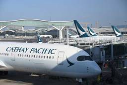
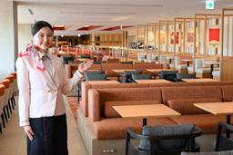
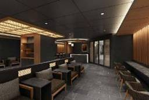
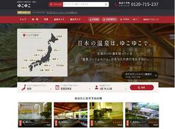

TRAICY（トライシー）
https://www.traicy.com/
TRAICY（トライシー）は、航空・LCC・鉄道・ホテル・ゲストハウス・バックパッカーズの最新情報を発信している、日本最大級のトラベルメディアです。
フィード
スーパーホテル、30周年限定ウイスキーを提供 宿泊者無料
TRAICY（トライシー）
スーパーホテルは、ホテル30周年オリジナルウイスキーを、全国のホテルのウェルカムバーで12月31日まで順次提供する。 宮崎県諸塚村で伐採時に出る枝を使ったナラ材スティックをボトルに入れた独自製造の商品。ボトルはラベルに「 […]投稿 スーパーホテル、30周年限定ウイスキーを提供 宿泊者無料 は TRAICY（トライシー） に最初に表示されました。
3時間前
JR東海リテイリング・プラス、駅弁ファン向けコミュニティサイト「ときめき駅弁ターミナル」を開設
TRAICY（トライシー）
JR東海リテイリング・プラスは、駅弁ファン向けのコミュニティサイト「ときめき駅弁ターミナル」を10月1日に開設した。 文字で駅弁の感想や情報を投稿できる「駅弁語り場」と、写真を投稿・閲覧できる「写真掲示板」を設ける。同社 […]投稿 JR東海リテイリング・プラス、駅弁ファン向けコミュニティサイト「ときめき駅弁ターミナル」を開設 は TRAICY（トライシー） に最初に表示されました。
10時間前
JAL、羽田空港T1南ウイングのファーストクラス・JGC専用カウンターをリニューアルオープン
TRAICY（トライシー）
日本航空（JAL）は、羽田空港第1ターミナル南ウイングのファーストクラス、JALグローバルクラブ（JGC）専用カウンターを、10月15日にリニューアルオープンした。 南ウイングの専用カウンターは、閉鎖せずに工事を行ってい […]投稿 JAL、羽田空港T1南ウイングのファーストクラス・JGC専用カウンターをリニューアルオープン は TRAICY（トライシー） に最初に表示されました。
16時間前
ハイアット、3泊ごとに3,000ポイント 12月15日まで
TRAICY（トライシー）
ハイアット・ホテルズは、会員プログラム「ワールド オブ ハイアット」でプロモーションを開催する。 9月29日から12月15日までの宿泊で、3泊ごとに3,000ポイントを付与する。付与上限は8,000ポイント。登録期間は9 […]投稿 ハイアット、3泊ごとに3,000ポイント 12月15日まで は TRAICY（トライシー） に最初に表示されました。
17時間前
トキエア、機体モチーフを支援者で完成させるクラウドファンディング開催中 10月31日まで
TRAICY（トライシー）
トキエアは、「あなたはトキエアのどこを買う？みんなで一機を完成させよう！」を9月17日から10月31日まで実施している。 機体を構成するパーツやエリアをモチーフにしたリターンを用意し、支援者が選んだリターンを通じて1機の […]投稿 トキエア、機体モチーフを支援者で完成させるクラウドファンディング開催中 10月31日まで は TRAICY（トライシー） に最初に表示されました。
18時間前
国土交通省、貸切バスの法令遵守状況を覆面調査 10月〜2月に実施
TRAICY（トライシー）
国土交通省は、運行中の貸切バスの法令遵守状況を調査するため、今年度も覆面添乗調査を実施する。 10月から2027年2月にかけて、調査委託者が一般利用者として無通告で実際に貸切バスに乗り込み、区域外運送の有無、休憩時間の確 […]投稿 国土交通省、貸切バスの法令遵守状況を覆面調査 10月〜2月に実施 は TRAICY（トライシー） に最初に表示されました。
19時間前

キャセイパシフィック航空、日本路線を最大週157往復運航 冬スケジュール計画
TRAICY（トライシー）
キャセイパシフィック航空は、冬スケジュールの日本路線を最大週157往復運航する。 路線別の便数は、東京/成田・大阪/関西〜香港線が1日5往復、福岡〜香港線が週17往復、東京/羽田・名古屋/中部〜香港線が1日2往復、東京/ […]投稿 キャセイパシフィック航空、日本路線を最大週157往復運航 冬スケジュール計画 は TRAICY（トライシー） に最初に表示されました。
21時間前
リージョナル航空4社、地域を結ぶエアラインフェスタを10月18日開催 伊丹空港で
TRAICY（トライシー）
ANAウイングス、ジェイエア、フジドリームエアラインズ（FDA）、アイベックスエアラインズは、「地域を結ぶエアラインフェスタ」を10月18日に開催する。 リージョナル航空・地方空港振興協議会の活動の一環で、リージョナル航 […]投稿 リージョナル航空4社、地域を結ぶエアラインフェスタを10月18日開催 伊丹空港で は TRAICY（トライシー） に最初に表示されました。
21時間前
ふるさと納税「ふるなびトラベル」、香川県高松市を追加 宿泊や飲食に利用可
TRAICY（トライシー）
アイモバイルは、ふるさと納税サイト「ふるなび」の旅行体験型返礼品「ふるなびトラベル」で、香川県高松市の提供を開始した。 ロイヤルパークホテル高松、天然温泉 玉藻の湯 ドーミーイン高松中央公園前、中西うどん、あづまうどん、 […]投稿 ふるさと納税「ふるなびトラベル」、香川県高松市を追加 宿泊や飲食に利用可 は TRAICY（トライシー） に最初に表示されました。
1日前
ヒルトン、イギリスで「スパークbyヒルトン」10軒を契約 ウェールズに初進出
TRAICY（トライシー）
ヒルトンは、「スパークbyヒルトン」をイギリスで10軒展開する。今年後半から2028年にかけて開業を予定している。 AG Hotels Groupとの戦略的合意に基づくもので、カーディフ、コベントリー、ダービー、ドンカス […]投稿 ヒルトン、イギリスで「スパークbyヒルトン」10軒を契約 ウェールズに初進出 は TRAICY（トライシー） に最初に表示されました。
1日前
KDDI、Pontaパス会員にじゃらんnetの「ブロンズステージ」特典を提供 2027年3月31日まで
TRAICY（トライシー）
KDDIは、Pontaパス会員を対象に、リクルートの旅行予約サービス「じゃらんnet」の「じゃらんステージプログラム」でブロンズステージ特典を利用できるキャンペーンを、10月1日から2027年3月31日まで実施する。 ブ […]投稿 KDDI、Pontaパス会員にじゃらんnetの「ブロンズステージ」特典を提供 2027年3月31日まで は TRAICY（トライシー） に最初に表示されました。
1日前
エティハド航空、アブダビ〜シドニー線を増便 12月15日から1日2往復に
TRAICY（トライシー）
エティハド航空は、アブダビ〜シドニー線を、12月15日から1日2往復に増便する。 同路線は現在週10往復を運航しているが、週4往復を追加し1日2往復となる。機材はエアバスA350-1000型機を使用する。 増便により、供 […]投稿 エティハド航空、アブダビ〜シドニー線を増便 12月15日から1日2往復に は TRAICY（トライシー） に最初に表示されました。
1日前
トキエア、「100時間限定タイムセール」開催 片道5,555円から
TRAICY（トライシー）
トキエアは、「100時間限定タイムセール」を10月16日正午から20日午後3時59分まで開催する。 新潟〜札幌/丘珠・名古屋/中部・神戸線が対象で、片道最低運賃は5,555円。旅客施設使用料とシステム利用料は別途必要。 […]投稿 トキエア、「100時間限定タイムセール」開催 片道5,555円から は TRAICY（トライシー） に最初に表示されました。
1日前
マレーシア航空と中国南方航空、コードシェアを拡大 10月25日から
TRAICY（トライシー）
マレーシア航空と中国南方航空は、マレーシア〜中国本土間の共同運航（コードシェア）路線を、10月25日から拡大する。 対象に加わるのは、マレーシア航空が運航するクアラルンプール〜深セン・長沙・厦門・成都/天府線と、中国南方 […]投稿 マレーシア航空と中国南方航空、コードシェアを拡大 10月25日から は TRAICY（トライシー） に最初に表示されました。
1日前
中国東方航空、上海/浦東〜オークランド〜ブエノスアイレス線を増便 12月5日から週4往復
TRAICY（トライシー）
中国東方航空は、上海/浦東〜オークランド〜ブエノスアイレス線を12月5日から増便する。 同路線は2025年12月4日に開設し、上海/浦東発月・木曜とブエノスアイレス発火・金曜の週2往復を運航している。これに上海/浦東発水 […]投稿 中国東方航空、上海/浦東〜オークランド〜ブエノスアイレス線を増便 12月5日から週4往復 は TRAICY（トライシー） に最初に表示されました。
1日前
「BASE LAYER HOTEL KOBE SANNOMIYA」、神戸三宮に11月10日開業
TRAICY（トライシー）
fav hospitality groupは、GREENINGとともに「BASE LAYER HOTEL KOBE SANNOMIYA」を11月10日に開業する。 客室はダブル、ツイン、キング、クイーン、コンフォートツイ […]投稿 「BASE LAYER HOTEL KOBE SANNOMIYA」、神戸三宮に11月10日開業 は TRAICY（トライシー） に最初に表示されました。
1日前
ホテル インターコンチネンタル 東京ベイ、クリスマス・ストロベリー ランチ＆ディナーブッフェ開催
TRAICY（トライシー）
ホテル インターコンチネンタル 東京ベイは、「CHEF’S GIFT クリスマス・ストロベリー ランチ＆ディナーブッフェ」を11月10日から12月25日まで開催する。 料理はハーブが香るローストチキンやフライドチキン、タ […]投稿 ホテル インターコンチネンタル 東京ベイ、クリスマス・ストロベリー ランチ＆ディナーブッフェ開催 は TRAICY（トライシー） に最初に表示されました。
1日前
ビューカード、個人情報漏えいなし
TRAICY（トライシー）
ビューカードは、個人情報の漏洩がなかったことを明らかにした。 10月9日、IDCフロンティアで発生した不正アクセスに伴い、利用するメール配信用の外部サービスからメールアドレス約403万件が漏えいした可能性があると発表した […]投稿 ビューカード、個人情報漏えいなし は TRAICY（トライシー） に最初に表示されました。
1日前

HIS、中東5か国行きツアーを11月15日まで催行中止
TRAICY（トライシー）
エイチ・アイ・エス（HIS）は、中東5か国を目的地とするツアーの催行中止期間を延長した。 アラブ首長国連邦（UAE）、カタール、バーレーン、オマーン、ヨルダンの5か国を目的地とするツアーを、11月15日まで催行を中止する […]投稿 HIS、中東5か国行きツアーを11月15日まで催行中止 は TRAICY（トライシー） に最初に表示されました。
2日前
グランドプリンスホテル新高輪、さつまいも×栗×かぼちゃのアフタヌーンティーを開催 11月25日まで
TRAICY（トライシー）
グランドプリンスホテル新高輪は、「Autumn Harvest Afternoon Tea」を9月17日から11月25日まで開催する。 アミューズはシャインマスカットとぶどうのアミューズ。プティフールはかぼちゃとレーズン […]投稿 グランドプリンスホテル新高輪、さつまいも×栗×かぼちゃのアフタヌーンティーを開催 11月25日まで は TRAICY（トライシー） に最初に表示されました。
2日前

JAL、”ステータスマッチ”導入の可能性否定せず 他社上級会員の取り込み策を調査
TRAICY（トライシー）
日本航空（JAL）は、他社のマイレージプログラム上級会員の移行制度、いわゆる「ステータスマッチ」の導入について調査している。 現在実施している「旅リピマイルキャンペーン」のキャンペーン登録時のアンケートの設問の一つ、「他 […]投稿 JAL、”ステータスマッチ”導入の可能性否定せず 他社上級会員の取り込み策を調査 は TRAICY（トライシー） に最初に表示されました。
2日前
ピーチ、国内線でセール開催 片道4,000円から
TRAICY（トライシー）
ピーチ・アビエーションは、国内線を対象としたセールを10月16日正午から19日まで開催する。 設定路線と「ミニマムプロモ」の片道最低運賃は以下の通り。燃油サーチャージなし、発券手数料や空港使用料等は別途必要となる。 搭乗 […]投稿 ピーチ、国内線でセール開催 片道4,000円から は TRAICY（トライシー） に最初に表示されました。
2日前
東海道・山陽新幹線、グリーン車の座席と設備改良 仕切り付き座席やパウダーコーナー導入
TRAICY（トライシー）
JR東海とJR西日本は、東海道・山陽新幹線のグリーン車の座席や設備を改良し、2027年12月15日以降、順次運用を開始する。 8・9号車には、ドリンクホルダーやスマートフォンホルダーを備える「多機能アームレスト座席」、1 […]投稿 東海道・山陽新幹線、グリーン車の座席と設備改良 仕切り付き座席やパウダーコーナー導入 は TRAICY（トライシー） に最初に表示されました。
2日前

東海道・山陽新幹線、主要駅にグリーン車・Supreme Class専用待合室 2027年12月15日から順次
TRAICY（トライシー）
JR東海とJR西日本は、東海道・山陽新幹線の「のぞみ」停車駅に、Supreme Classとグリーン車の利用者専用の待合室を新設する。 対象は東京・品川・新横浜・名古屋・京都・新大阪・広島・小倉・博多の9駅。駅ごとに異 […]投稿 東海道・山陽新幹線、主要駅にグリーン車・Supreme Class専用待合室 2027年12月15日から順次 は TRAICY（トライシー） に最初に表示されました。
2日前
JR3社、「EXサービス」の商品価格を改定 東京〜新大阪駅間は700円値上げ
TRAICY（トライシー）
JR東海とJR西日本、JR九州は、東海道・山陽・九州新幹線のネット予約・チケットレス乗車サービス「エクスプレス予約」「スマートEX」「LINEからEX」の商品価格を改定する。 東海道・山陽新幹線「のぞみ」「みずほ」の指定 […]投稿 JR3社、「EXサービス」の商品価格を改定 東京〜新大阪駅間は700円値上げ は TRAICY（トライシー） に最初に表示されました。
2日前
東海道・山陽新幹線に次期車両「S0系」を投入 2029年7月に営業運転開始
TRAICY（トライシー）
JR東海は、東海道・山陽新幹線に次期車両「S0系」を投入する。営業運転の開始は2029年7月を予定している。 N700S以来のフルモデルチェンジとなり、車両名は現行のN700系シリーズを超える革新的な車両として、新たな進 […]投稿 東海道・山陽新幹線に次期車両「S0系」を投入 2029年7月に営業運転開始 は TRAICY（トライシー） に最初に表示されました。
2日前

東海道・山陽新幹線「のぞみ」「みずほ」、指定席特急料金とグリーン料金を値上げ
TRAICY（トライシー）
JR東海とJR西日本は、東海道・山陽新幹線について、「のぞみ」「みずほ」の普通車指定席とグリーン車に適用する指定席特急料金と、全列車のグリーン車に適用するグリーン料金を改定する。 「のぞみ」「みずほ」の指定席特急料金は2 […]投稿 東海道・山陽新幹線「のぞみ」「みずほ」、指定席特急料金とグリーン料金を値上げ は TRAICY（トライシー） に最初に表示されました。
2日前
ホテルオークラJRハウステンボス、2027年10月に「オリエンタルホテルJRハウステンボス」にリブランド
TRAICY（トライシー）
JR九州ホテルズアンドリゾーツは、ホテルオークラJRハウステンボスを「オリエンタルホテルJRハウステンボス」として、2027年10月1日にリブランドする。ホテルマネージメントジャパンとフランチャイズ契約を締結した。 ホテ […]投稿 ホテルオークラJRハウステンボス、2027年10月に「オリエンタルホテルJRハウステンボス」にリブランド は TRAICY（トライシー） に最初に表示されました。
2日前

ゆこゆこ、「九州ふっこう応援割」を10月16日午後2時販売再開 鹿児島県対象
TRAICY（トライシー）
ゆこゆこは、宿泊予約サイト「ゆこゆこネット」で、旅行支援「九州ふっこう応援割」の熊本県の販売二次受付を、10月16日午後2時から開始する。 宿泊単体が対象となる。宿泊期間は10月16日から12月25日（翌日チェックアウト […]投稿 ゆこゆこ、「九州ふっこう応援割」を10月16日午後2時販売再開 鹿児島県対象 は TRAICY（トライシー） に最初に表示されました。
2日前
日本旅行、「九州ふっこう応援割」を10月16日午後2時販売開始 福岡県対象
TRAICY（トライシー）
日本旅行は、旅行支援「九州ふっこう応援割」の福岡県の販売を、10月16日午後2時から開始した。 販売対象は航空券・JRと宿泊がセットになったダイナミックパッケージのみとなる。宿泊期間は10月30日から12月14日（出発分 […]投稿 日本旅行、「九州ふっこう応援割」を10月16日午後2時販売開始 福岡県対象 は TRAICY（トライシー） に最初に表示されました。
2日前